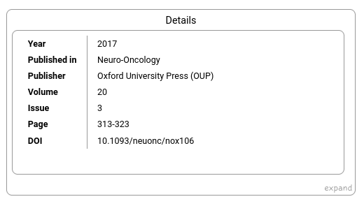

A simple DOI lookup tool available at doi.kaikitagawajones.com.
The main focus of the tool is to shown relationships (citations and references) between articles, as shown below. This information is provided by the OpenCitations Indexes unifying REST API.
Basic information about the article is also shown using information provided by the Crossref REST API:
In addition, easy-to-copy citations are also provided in plaintext, BibTeX, and RIS. The citation text is taken directly from doi.org. This document provides a good explanation of how this process works.
The webapp was implemented in vanilla JavaScript.